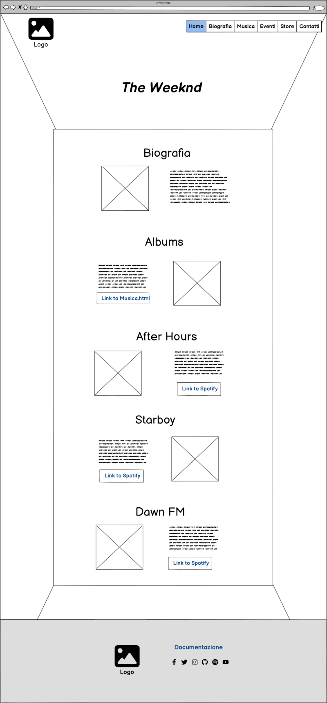
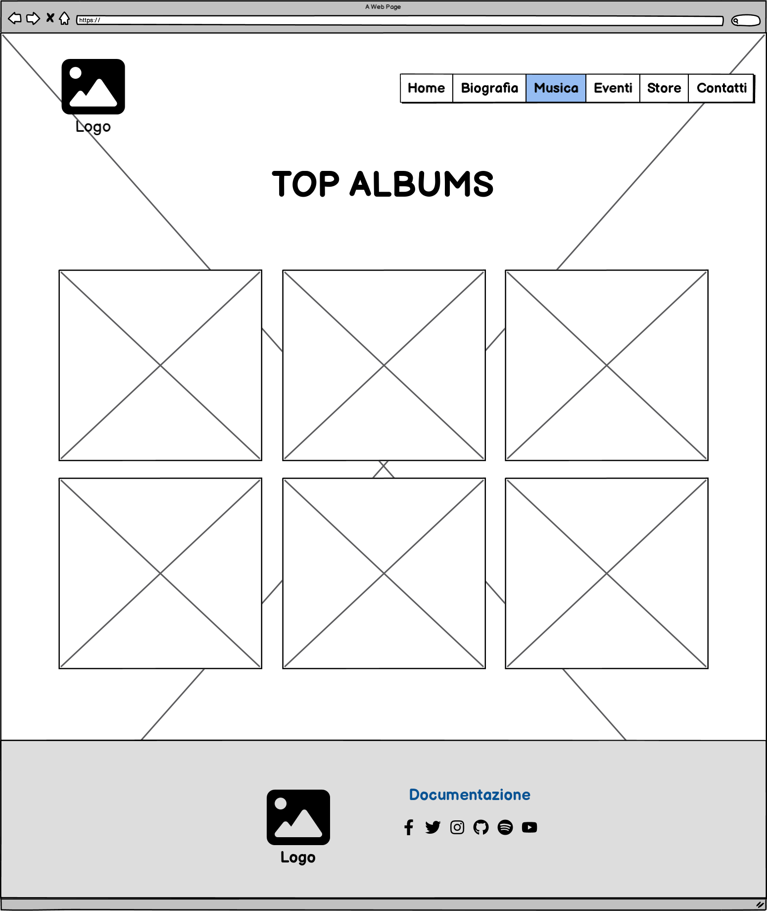
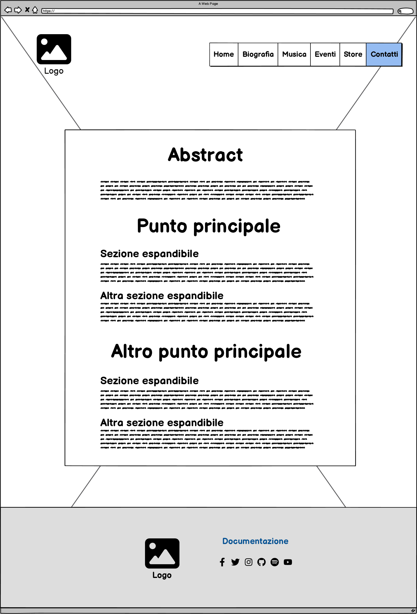

Abstract
Il sito dedicato a The Weeknd si propone come punto di riferimento per i fan e chiunque sia interessato all'artista, mirando maggiormente al pubblico under 35. Offre informazioni dettagliate sulla sua musica e la sua carriera, consentendo agli utenti di esplorare la discografia e scoprire dettagli su di lui. Con un design pulito ed elegante, la piattaforma offre una navigazione fluida e intuitiva, garantendo una perfetta esperienza su qualsiasi dispositivo grazie alla sua completa responsiveness. È uno spazio indispensabile per i fan, ma altrettanto utile per chi si avvicina per la prima volta all'universo musicale di The Weeknd.
Project Management Plan
Obiettivi
L'obbiettivo consiste nella creazione di un sito web accessibile a tutti, che consenta di esplorare la musica e altre informazioni riguardanti The Weeknd, includendo collegamenti diretti ad altre piattaforme per ascoltare i suoi album di maggior successo (come ad esempio Spotify), rendendo l'esperienza il più comoda possibile.
Target Utente
Il target di riferimento per questo sito è prevalentemente composto da individui sotto i 35 anni, ossia quella fascia d'età che mostra un maggiore interesse per questo genere di musica.
Competitors
I competitors di questo progetto sono i due siti ufficiali di The Weeknd
(https://www.theweeknd.com/ e https://theweekndofficial.co/).
Entrambi soffrono di UX e UI non ottimali, in quanto gli elementi nelle pagine sono disposti
senza una logica evidente e risultano carenti di informazioni testuali. Inoltre, si basano
eccessivamente su cover di album o video su Youtube. In entrambi i casi, lo sfondo è bianco
e il testo è nero, ma ciò non rispecchia lo stile distintivo che ha reso celebre The Weeknd:
rosso e nero con sfumature dorate, evocando sia la giacca rossa con dettagli dorati che
l'abito nero presenti nel video ufficiale di "Blinding Lights" e sulla copertina dell'album
"After Hours".
Architettura del sito
Wireframe
  Look and feel
All'entrata nel sito, l'utente si troverà di fronte all'immagine che farà da sfondo per
l'intera esperienza: un primo piano di The Weeknd tratto dal video ufficiale di Blinding
Lights. Le tonalità nere, rosse e oro richiamano lo stile distintivo
dell'artista, caratterizzato da sfondi scuri e abiti sgargianti, sottolineando la sua
importanza visiva.
La navbar visibile all'entrata si adatta allo schermo: su dispositivi più piccoli, diventa
un burger-menù, agevolando la navigazione tra le pagine come Homepage, Musica e
Documentazione. Resta sempre accessibile, evidenziando il pulsante della pagina attiva per
orientare l'utente e rendere la navigazione intuitiva e agevole.
Il design complessivo offre un'esperienza pulita ed elegante, con un'interfaccia
intuitiva
che garantisce una navigazione agevole su qualsiasi dispositivo grazie al suo layout fluido
e responsive.
Il design è stato costruito con l'obiettivo di massimizzare la verticalità, garantendo così
un'esperienza facilmente fruibile anche da dispositivi mobili. Questa scelta consente una
navigazione intuitiva e agevole, ottimizzata per sfruttare al meglio lo spazio verticale
dello schermo su qualsiasi dispositivo, senza compromettere la leggibilità o la facilità
d'uso.
Nella sezione 'Musica', l'esperienza è arricchita da esclusivi embed di Spotify, i quali
offrono agli utenti la possibilità di ascoltare in anteprima e godere degli album più
celebri di The Weeknd. Grazie a questi iframe integrati direttamente dal servizio Spotify,
gli utenti possono immergersi nelle tracce musicali iconiche dell'artista senza lasciare la
pagina, arricchendo così l'esperienza audio sul sito.
Inoltre, per mantenere coerenza con la palette cromatica predominante, ho personalizzato il
cursore della pagina adottando una tonalità di rosso tenue. Questa scelta cromatica mira a
integrarsi armoniosamente con i toni principali di rosso e oro presenti nello stile
distintivo dell'artista, contribuendo a un'esperienza visiva unificata e coinvolgente
durante la navigazione, senza risultare eccessivamente brillante o ingombrare la visione
dell'utente.
Linguaggi:
- HTML
- CSS
- JavaScript
Strumenti:
- Visual Studio Code come text editor
- Gimp per la modifica di immagini
- Svg repo per alcune icone
- Logseq per la stesura della documentazione
- Draw.io per la creazione dei diagrammi
- Google images per raccogliere le immagini
- Uiverse per l'aggiunta di alcuni elementi grafici
- Balsamiq per i Wireframe
- Bootstrap per la navbar e per altre cose minori
- Google Fonts per il font della documentazione
Communication Strategy
I competitors hanno implementato UX e UI scadenti, rendendo l'esperienza utente pessima. Questo
porta gli utenti a vagare tra i due siti senza riuscire a trovare ciò che desiderano:
informazioni e
musica, e non solo immagini.
Anche se i link diretti a YouTube per i video originali sono vantaggiosi, la creazione di un
sito
basato solo su questo elemento risulta insufficiente. Per questo motivo, il sito che ho
sviluppato è
molto più lineare, comprensibile e mirato, evitando dispersione e focalizzandosi sull'obiettivo
principale di soddisfare le richieste degli utenti.
Il progetto mira a promuovere la conoscenza di The Weeknd coinvolgendo un vasto pubblico tramite
uno
dei social network più diffusi: Instagram.
In particolare, l'obiettivo è ottenere 30 like.
Il target audience è quello di persone under 35, ovvero coloro che potrebbero essere maggiormente interessate a questo genere di musica.
La promozione è stata condotta tramite una pagina Instagram e attraverso il passaparola con amici e conoscenti.
Gli obiettivi sono stati raggiunti con successo.